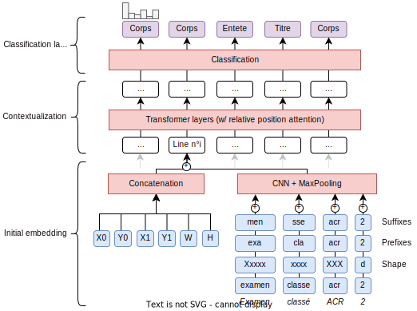

Training a Pipeline
In this chapter, we'll see how we can train a deep-learning based classifier to better classify the lines of the document and extract texts from the document.
The architecture of the trainable classifier of this recipe is described in the following figure: 
{kind=link}
Step-by-step walkthrough
Training supervised models consists in feeding batches of samples taken from a training corpus to a model instantiated from a given architecture and optimizing the learnable weights of the model to decrease a given loss. The process of training a pipeline with EDS-PDF is as follows:
-
We first start by seeding the random states and instantiating a new trainable pipeline
from edspdf import Pipeline from edspdf.utils.random import set_seed set_seed(42) model = Pipeline() model.add_pipe("pdfminer-extractor", name="extractor") model.add_pipe( "deep-classifier", name="classifier", config={ "embedding": { "@factory": "box-embedding", "size": 72, "dropout_p": 0.1, "text_encoder": { "@factory": "box-text-embedding", "pooler": { "@factory": "cnn-pooler", "out_channels": 64, "kernel_sizes": (3, 4, 5), }, }, "layout_encoder": { "@factory": "box-layout-embedding", "n_positions": 64, "x_mode": "sin", "y_mode": "sin", "w_mode": "sin", "h_mode": "sin", }, }, }, ) model.add_pipe("simple-aggregator", name="aggregator") -
We then load and adapt (i.e., convert into PDFDoc) the training and validation dataset, which is often a combination of JSON and PDF files. The recommended way of doing this is to make a Python generator of PDFDoc objects.
train_docs = list(segmentation_adapter(train_path)(model)) val_docs = list(segmentation_adapter(val_path)(model)) -
We initialize the missing or incomplete components attributes (such as vocabularies) with the training dataset
model.initialize(train_docs) -
The training dataset is then preprocessed into features. The resulting preprocessed dataset is then wrapped into a pytorch DataLoader to be fed to the model during the training loop with the model's own collate method.
preprocessed = model.preprocess_many(train_docs, supervision=True) dataloader = DataLoader( preprocessed, batch_size=4, shuffle=True, collate_fn=model.collate ) -
We instantiate an optimizer and start the training loop
from itertools import chain, repeat optimizer = torch.optim.AdamW( params=model.parameters(), lr=3e-4, ) # We will loop over the dataloader iterator = chain.from_iterable(repeat(dataloader)) for step in tqdm(range(max_steps), "Training model", leave=True): batch = next(iterator) optimizer.zero_grad() -
The trainable components are fed the collated batches from the dataloader with the [
TrainableComponent.module_forward][edspdf.component.TrainableComponent.module_forward] methods to compute the losses. Since outputs of shared subcomponents are cached, we must not forget to empty the cache at every step. The training loop is otherwise carried in a similar fashion to a standard pytorch training loopmodel.reset_cache() loss = torch.zeros((), device="cpu") for component in model.trainable_components: output = component.module_forward( batch[component.name], supervision=True, ) loss += output["loss"] loss.backward() optimizer.step() -
Finally, the model is evaluated on the validation dataset at regular intervals and saved at the end of the training
if (step % 100) == 0: print(model.score(val_docs)) torch.save(model, "model.pt")
Adapting a dataset
The first step of training a pipeline is to adapt the dataset to the pipeline. This is done by converting the dataset into a list of PDFDoc objects.
from edspdf.utils.alignment import align_box_labels
@registry.adapter.register("my-segmentation-adapter")
def segmentation_adapter(
path: DirectoryPath,
) -> Callable[[Pipeline], Generator[PDFDoc, Any, None]]:
def adapt_to(model):
for anns_filepath in sorted(Path(path).glob("*.json")):
pdf_filepath = str(anns_filepath).replace(".json", ".pdf")
with open(anns_filepath) as f:
sample = json.load(f)
pdf = Path(pdf_filepath).read_bytes()
if len(sample["annotations"]) == 0:
continue
doc = model.components.extractor(pdf)
doc.id = pdf_filepath.split(".")[0].split("/")[-1]
doc.lines = [
line
for page in sorted(set(b.page for b in doc.lines))
for line in align_box_labels(
src_boxes=[
Box(
page=b["page"],
x0=b["x0"],
x1=b["x1"],
y0=b["y0"],
y1=b["y1"],
label=b["label"],
)
for b in sample["annotations"]
if b["page"] == page
],
dst_boxes=doc.lines,
pollution_label=None,
)
if line.text == "" or line.label is not None
]
yield doc
return adapt_to
Full example
Let's wrap the training code in a function, and make it callable from the command line !
train.py
1 2 3 4 5 6 7 8 9 10 11 12 13 14 15 16 17 18 19 20 21 22 23 24 25 26 27 28 29 30 31 32 33 34 35 36 37 38 39 40 41 42 43 44 45 46 47 48 49 50 51 52 53 54 55 56 57 58 59 60 61 62 63 64 65 66 67 68 69 70 71 72 73 74 75 76 77 78 79 80 81 82 83 84 85 86 87 88 89 90 91 92 93 94 95 96 97 98 99 100 101 102 103 104 105 106 107 108 109 110 111 112 113 114 115 116 117 118 119 120 121 122 123 124 125 126 127 128 129 130 131 132 133 134 135 | |
python train.py --seed 42
At the end of the training, the pipeline is ready to use (with the .pipe method) since every trained component of the pipeline is self-sufficient, ie contains the preprocessing, inference and postprocessing code required to run it.
Configuration
To decouple the configuration and the code of our training script, let's define a configuration file where we will describe both our training parameters and the pipeline.
# This is this equivalent of the API-based declaration at the beginning of the tutorial
[pipeline]
components = ["extractor","classifier"]
components_config = ${components}
[components]
[components.extractor]
@factory = pdfminer-extractor
[components.classifier]
@factory = deep-classifier
[components.classifier.embedding]
@factory = box-embedding
size = 72
dropout_p = 0.1
[components.classifier.embedding.text_encoder]
@factory = "box-text-embedding"
[components.classifier.embedding.text_encoder.pooler]
@factory = "cnn-pooler"
out_channels = 64
kernel_sizes = [3,4,5]
[components.classifier.embedding.layout_encoder]
@factory = "box-layout-embedding"
n_positions = 64
x_mode = sin
y_mode = sin
w_mode = sin
h_mode = sin
# This is were we define the training script parameters
# the "train" section refers to the name of the command in the training script
[train]
pipeline = ${pipeline}
train_data = {"@adapter": "my-segmentation-adapter", "path": "data/train"}
val_data = {"@adapter": "my-segmentation-adapter", "path": "data/val"}
max_steps = 1000
seed = 42
lr = 3e-4
batch_size = 4
and update our training script to use the pipeline and the data adapters defined in the configuration file instead of the Python declaration :
@app.command(name="train")
def train_my_model(
+ pipeline: Pipeline,
+ train_path: DirectoryPath = "data/train",
- train_data: Callable = segmentation_adapter("data/train"),
+ val_path: DirectoryPath = "data/val",
- val_data: Callable = segmentation_adapter("data/val"),
seed: int = 42,
max_steps: int = 1000,
batch_size: int = 4,
lr: float = 3e-4,
):
set_seed(seed)
- # We define the model
- model = Pipeline()
- model.add_pipe("pdfminer-extractor", name="extractor")
- model.add_pipe("deep-classifier", name="classifier", config={
- "embedding": {
- "@factory": "box-embedding",
- "size": 72,
- "dropout_p": 0.1,
- "text_encoder": {
- "@factory": "box-text-embedding",
- "pooler": {"@factory": "cnn-pooler", "out_channels": 64, "kernel_sizes": (3, 4, 5)}
- },
- "layout_encoder": {
- "@factory": "box-layout-embedding",
- "n_positions": 64, "x_mode": "sin", "y_mode": "sin", "w_mode": "sin", "h_mode": "sin",
- },
- },
- })
- model.add_pipe("simple-aggregator", name="aggregator")
# Loading and adapting the training and validation data
- train_docs = list(segmentation_adapter(train_path)(model))
+ train_docs = list(train_data(model))
- val_docs = list(segmentation_adapter(val_path)(model))
+ val_docs = list(val_data(model))
# Taking the first `initialization_subset` samples to initialize the model
...
That's it ! We can now call the training script with the configuration file as a parameter, and override some of its defaults values:
python train.py --config config.cfg --seed 43